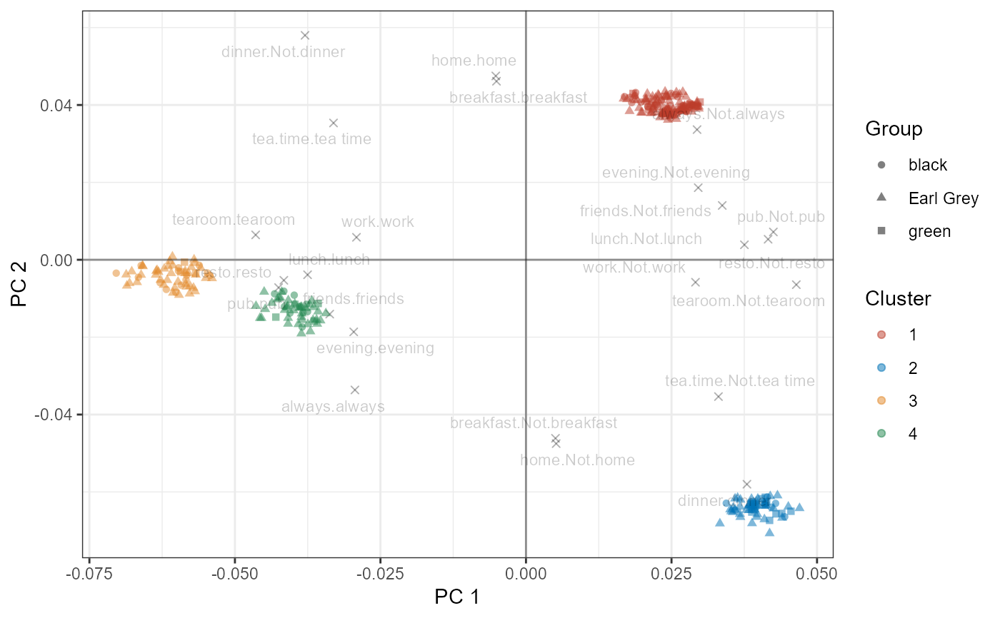
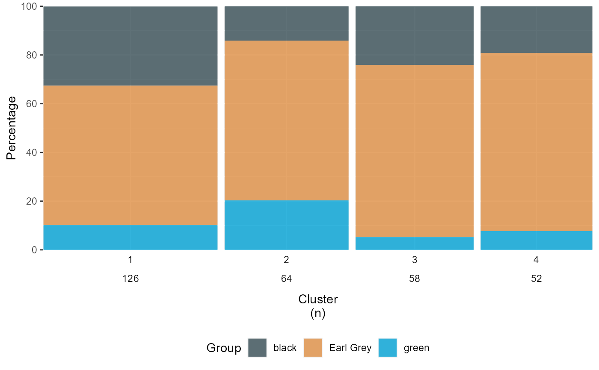
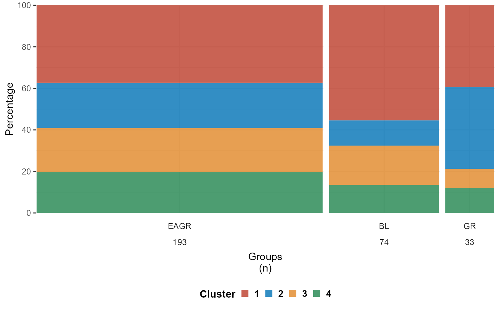
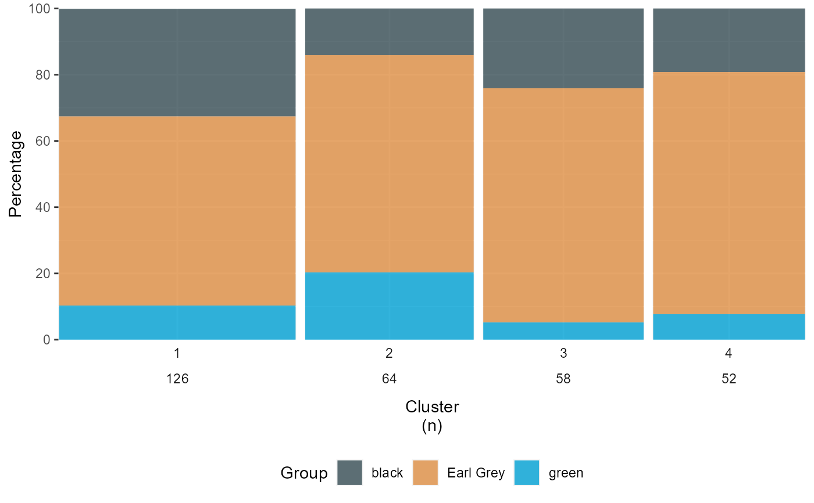
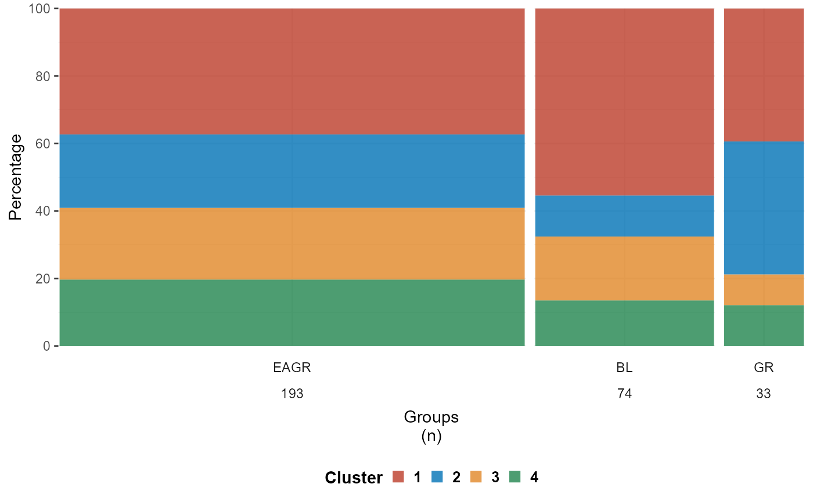

Feature selection + dimention reduction + clustering
emr_clust.RdThese function can handle numerical and categorical data
Usage
emr_clust(
data,
group,
center = TRUE,
scale = TRUE,
kmoCutoff,
method = c("RKM", "FKM", "clusCA", "iFCB", "MCAk", "PCA", "SVD", "TSNE", "MDS", "MCA",
"Kmedoid", "Kmean"),
nclus,
ndim,
nstart = 10,
rotation = "none",
alphak = 0.5,
criterion = c("asw", "ch", "crit"),
dst = c("full", "low"),
perplexity = 30,
theta = 0.4,
distMethod = c("euclidean", "manhattan"),
seed = NULL,
pc.params = NULL,
attr.params = NULL,
text.params = NULL,
cluster_color_set = NULL,
bar.params = NULL,
choose_group = NULL
)Arguments
- data
Dataset with metric variables.
- group
to choose data gruup.
- center
a logical value indicating whether the variables should be shifted to be zero centered. Alternately, a vector of length equal the number of columns of x can be supplied. The value is passed to
scale(default = TRUE).- scale
a logical value indicating whether the variables should be scaled to have unit variance before the analysis takes place. The default is FALSE for consistency with S, but in general scaling is advisable. Alternatively, a vector of length equal the number of columns of x can be supplied (default = TRUE).
- kmoCutoff
KMO test(Kaiser–Meyer–Olkin test).
- method
Specifies the method. Combine methods:
RKMfor reduced K-means,FKMfor factorial K-means,MCAkfor MCA K-means,iFCBfor Iterative Factorial Clustering of Binary variables andclusCAfor Cluster Correspondence Analysis.Seperated methods: Dimension reduction methodsPCAfor Principal Component Analysis,SVDfor Singular Value Decomposition,TSNEfor t-distributed Stochastic Neighbor Embedding,MDSfor Multidimensional Scaling andMCAfor Multiple correspondence analysis. Clustering methodsKmedoid,Kmean.- nclus
Number of clusters .
- ndim
Dimensionality of the solution.
- nstart
Number of starts (default = 50).
- rotation
Specifies the method used to rotate the factors.
- alphak
Non-negative scalar to adjust for the relative importance of MCA (alphak = 1) and K-means (alphak = 0) in the solution (default = .5). Works only in combination with method =
MCAk.- criterion
One of
asw,ch,crit. Determines whether average silhouette width, Calinski-Harabasz index ,criterion value or objective value of the selected method is used (default =asw).- dst
Specifies the data used to compute the distances between objects. Options are
fullfor the original data (after possible scaling) andlowfor the object scores in the low-dimensional space (default =full).- perplexity
for dimension reduction method
TSNE; numeric; Perplexity parameter (should not be bigger than 3 * perplexity < nrow(X) - 1, see details for interpretation).- theta
for dimension reduction method
TSNE; numeric; Speed/accuracy trade-off (increase for less accuracy), set to 0.0 for exact TSNE (default: 0.5).- distMethod
the distance measure to be used. This must be one of
euclidean,manhattan. Any unambiguous substring can be given.- seed
An integer that is used as argument by
set.seed()for offsetting the random number generator.- pc.params
to adjust ggplot clustering_biplots.
- attr.params
to adjust ggplot clustering_biplots.
- text.params
to adjust ggplot clustering_biplots.
- cluster_color_set
to adjust ggplot biplot.
- bar.params
to adjust ggplot profile_by_cluster_integrated & profile_by_group_integrated.
- choose_group
to adjust ggplot only show the parameter want to see.
Value
clust data
list.
clust_out: Simple output data table including tuning output table.statistic_table: Complete dimention reduction and clustering table with Descriptive statistics table.biplot: Result presentation for clustering results.Including Biplot of the first and second principal components,the number and proportion of case in each cluster and the number and proportion of case in each group.
Details
emr_clust can be used for doing feature selection + dimention reduction + clustering with data Visualization.
the data input should be a data frame object in R, and contain at least one cluster coloumn.
Also, if inputting categorical dataset make sure it has already been converted into Binary factor datasets.
Examples
#for categorical dataset with combine dimention reduction & clustering method example
library(FactoMineR)
data(tea)
# I. Data doing feature selection + dimention reduction + clustering with result presentation for distribution of variables
emr_cat<-emr_clust(tea[,1:13],
method =c("MCAk"),
kmoCutoff = 0.5,
nclus=c(4:5),
ndim=c(2:3),
group="Tea",
nstart=50)
#>
#> bartlett_results isn't significant
#> [1] "Running for 4 clusters and 2 dimensions..."
#>
|
| | 0%
|
|======= | 10%
#> Warning: The `x` argument of `as_tibble.matrix()` must have unique column names if
#> `.name_repair` is omitted as of tibble 2.0.0.
#> ℹ Using compatibility `.name_repair`.
#> ℹ The deprecated feature was likely used in the clustrd package.
#> Please report the issue to the authors.
#>
|
|============== | 20%
|
|===================== | 30%
|
|============================ | 40%
|
|=================================== | 50%
|
|========================================== | 60%
|
|================================================= | 70%
|
|======================================================== | 80%
|
|=============================================================== | 90%
|
|======================================================================| 100%[1] "Running for 4 clusters and 3 dimensions..."
#>
|
| | 0%
|
|======= | 10%
|
|============== | 20%
|
|===================== | 30%
|
|============================ | 40%
|
|=================================== | 50%
|
|========================================== | 60%
|
|================================================= | 70%
|
|======================================================== | 80%
|
|=============================================================== | 90%
|
|======================================================================| 100%[1] "Running for 5 clusters and 2 dimensions..."
#>
|
| | 0%
|
|======= | 10%
|
|============== | 20%
|
|===================== | 30%
|
|============================ | 40%
|
|=================================== | 50%
|
|========================================== | 60%
|
|================================================= | 70%
|
|======================================================== | 80%
|
|=============================================================== | 90%
|
|======================================================================| 100%[1] "Running for 5 clusters and 3 dimensions..."
#>
|
| | 0%
|
|======= | 10%
|
|============== | 20%
|
|===================== | 30%
|
|============================ | 40%
|
|=================================== | 50%
|
|========================================== | 60%
|
|================================================= | 70%
|
|======================================================== | 80%
|
|=============================================================== | 90%
|
|======================================================================| 100%
|
| | 0%
|
|======= | 10%
|
|============== | 20%
|
|===================== | 30%
|
|============================ | 40%
|
|=================================== | 50%
|
|========================================== | 60%
|
|================================================= | 70%
|
|======================================================== | 80%
|
|=============================================================== | 90%
|
|======================================================================| 100%
#show the tuning output table
knitr::kable(head(emr_cat$clust_out$tune_table),"pipe")
#>
#>
#> | |Dim2 |Dim3 |
#> |:--|:-----|:-----|
#> |4 |0.165 |0.198 |
#> |5 |0.127 |0.171 |
#show the statistic table
knitr::kable(head(emr_cat$statistics_table$PC_data),"pipe")
#>
#>
#> | PC 1| PC 2| PC 3|Cluster |breakfast |tea.time |evening |lunch |dinner |always |home |work |tearoom |friends |resto |pub |Tea |Group |
#> |----------:|----------:|----------:|:-------|:-------------|:------------|:-----------|:---------|:----------|:----------|:----|:--------|:-----------|:-----------|:---------|:-------|:---------|:---------|
#> | 0.0289316| 0.0399754| -0.0019143|1 |breakfast |Not.tea time |Not.evening |Not.lunch |Not.dinner |Not.always |home |Not.work |Not.tearoom |Not.friends |Not.resto |Not.pub |black |black |
#> | 0.0289316| 0.0399754| -0.0019143|1 |breakfast |Not.tea time |Not.evening |Not.lunch |Not.dinner |Not.always |home |Not.work |Not.tearoom |Not.friends |Not.resto |Not.pub |black |black |
#> | -0.0378439| -0.0168800| 0.0745295|4 |Not.breakfast |tea time |evening |Not.lunch |dinner |Not.always |home |work |Not.tearoom |friends |resto |Not.pub |Earl Grey |Earl Grey |
#> | 0.0460351| -0.0648176| -0.0102655|2 |Not.breakfast |Not.tea time |Not.evening |Not.lunch |dinner |Not.always |home |Not.work |Not.tearoom |Not.friends |Not.resto |Not.pub |Earl Grey |Earl Grey |
#> | 0.0247160| 0.0361189| -0.0029188|1 |breakfast |Not.tea time |evening |Not.lunch |Not.dinner |always |home |Not.work |Not.tearoom |Not.friends |Not.resto |Not.pub |Earl Grey |Earl Grey |
#> | 0.0460351| -0.0648176| -0.0102655|2 |Not.breakfast |Not.tea time |Not.evening |Not.lunch |dinner |Not.always |home |Not.work |Not.tearoom |Not.friends |Not.resto |Not.pub |Earl Grey |Earl Grey |
knitr::kable(head(emr_cat$statistics_table$attr_data),"pipe")
#>
#>
#> |Variable | PC 1| PC 2| PC 3|
#> |:-----------------------|----------:|----------:|----------:|
#> |breakfast.breakfast | -0.0050678| 0.0461379| -0.0119543|
#> |breakfast.Not.breakfast | 0.0050678| -0.0461379| 0.0119543|
#> |tea.time.Not.tea time | 0.0330662| -0.0353540| -0.0081694|
#> |tea.time.tea time | -0.0330662| 0.0353540| 0.0081694|
#> |evening.evening | -0.0295907| -0.0186271| 0.0248917|
#> |evening.Not.evening | 0.0295907| 0.0186271| -0.0248917|
knitr::kable(head(emr_cat$statistics_table$use_table),"pipe")
#>
#>
#> |Ori_Variable |Variable |black
#> (n = 74) |Earl Grey
#> (n = 193) |green
#> (n = 33) |p value |
#> |:------------|:-------------|:-------------|:------------------|:-------------|:-------|
#> |always |Not.always |55 (74.32) |119 (61.66) |23 (69.70) |0.130 |
#> |NA |always |19 (25.68) |74 (38.34) |10 (30.30) |NA |
#> |breakfast |Not.breakfast |34 (45.95) |100 (51.81) |22 (66.67) |0.140 |
#> |NA |breakfast |40 (54.05) |93 (48.19) |11 (33.33) |NA |
#> |dinner |Not.dinner |71 (95.95) |179 (92.75) |29 (87.88) |0.311 |
#> |NA |dinner |3 (4.05) |14 (7.25) |4 (12.12) |NA |
#Biplot of the first and second principal components
emr_cat$biplot$clustering_biplots
#> [[1]]

#>
#> [[2]]
 #>
#Profile the number and proportion of case in each cluster
emr_cat$biplot$profile_by_cluster_integrated

#Profile the number and proportion of case in each group
emr_cat$biplot$profile_by_group_integrated

#>
#Profile the number and proportion of case in each cluster
emr_cat$biplot$profile_by_cluster_integrated

#Profile the number and proportion of case in each group
emr_cat$biplot$profile_by_group_integrated
